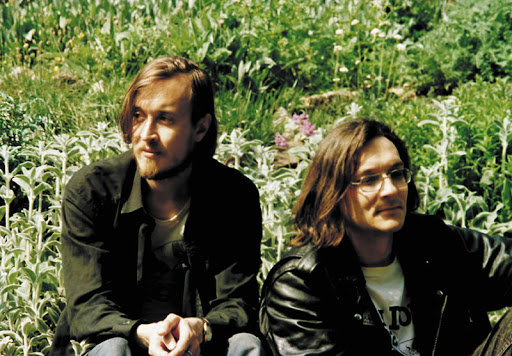

О Гражданской Обороне
Сибирская панк-рок группа была образована Игорем Летовым и Константином Рябиновым 8 ноября 1984 года в Омске.
Музыка коллектива на начальном этапе представляла собой панк-рок с сильным гаражным влиянием, сохранявшимся на всём протяжении творческой деятельности группы, а в 1990-х годах её стилистика сместилась в сторону психоделического рока.
В 1990 году, во время временного прекращения существования группы Гражданская Оборона, был создан сайд-проект «Егор и опизденевшие». Композиции проекта характеризуются как психоделические. Заметно влияние американского гаражного рока и психоделии 60-х, которые совмещаются с музыкальными идеями постпанка; помимо этого, местами присутствуют элементы характерного для прежнего творчества «Гражданской Обороны» нойз-рока, также, в особенности на альбоме «Прыг-скок», встречается фолк-рок и его ответвление, психоделический фолк. По словам Летова, нецензурное название было дано коллективу для того, чтобы максимально затруднить упоминание его творчества в СМИ и тем самым обезопаситься от конъюнктурности

Оснаватели группы Гражданская оборона.
Игорь (Егор) Летов слева и Константин Рябинов справа.
Ранне в 1982 Егор Летов создал свой первый рок-проект предшествующий Гражданской Обороне под названием Посев, на тот момент музыканту и поэту было 18 лет.
Название проект получил в честь диссидентского журнала «Посев», издающегося НТС.
В рамках проекта исполнялся гаражный панк, панк-рок, психоделия, а также экспериментальные композиции.